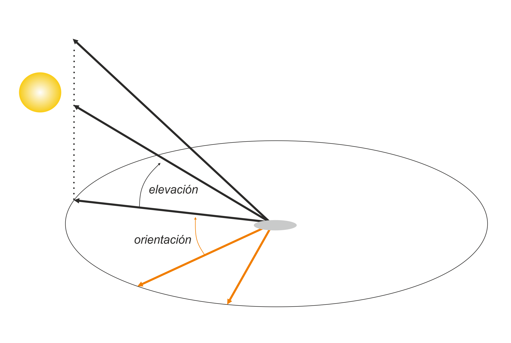

Efecto hillshade o sombras de laderas

Es muy habitual ver mapas de relieve con efectos de sombras, también conocidos como ‘hillshade’ lo que genera una profundidad visual. ¿Cómo podemos crear estos efectos en R y visualizarlos en ggplot2?
Paquetes
| Paquete | Descripción |
|---|---|
| tidyverse | Conjunto de paquetes (visualización y manipulación de datos): ggplot2, dplyr, purrr,etc. |
| sf | Simple Feature: importar, exportar y manipular datos vectoriales |
| elevatr | Acceso a datos de elevación desde varias API |
| terra | Importar, exportar y manipular raster (paquete sucesor de raster) |
| whitebox | Una interfaz R para la biblioteca ‘WhiteboxTools’, que es una plataforma avanzada de análisis de datos geoespaciales |
| tidyterra | Funciones auxilares para trabajar con {terra} |
| giscoR | Límites administrativos del mundo |
| ggnewscale | Extensión para ggplot2 de múltiples ‘scales’ |
| ggblend | Extensión para mezclar colores de gráficos ggplot |
# instalamos los paquetes si hace falta
if(!require("tidyverse")) install.packages("tidyverse")
if(!require("sf")) install.packages("sf")
if(!require("elevatr")) install.packages("elevatr")
if(!require("terra")) install.packages("terra")
if(!require("whitebox")) install.packages("whitebox")
if(!require("tidyterra")) install.packages("tidyterra")
if(!require("giscoR")) install.packages("giscoR")
if(!require("ggnewscale")) install.packages("ggnewscale")
if(!require("ggblend")) install.packages("ggblend")
# paquetes
library(sf)
library(elevatr)
library(tidyverse)
library(terra)
library(whitebox)
library(ggnewscale)
library(tidyterra)
library(giscoR)
library(units)
library(ggblend)Datos
Como área de interés usamos Suiza en este ejemplo. Con excepción de los límites de lagos descarga, los datos necesarios los obtenemos a través de APIs usando diferentes paquetes. El paquete giscoR permite obtener los límites de países con diferentes resoluciones.
suiz <- gisco_get_countries(country = "Switzerland", resolution = "03")
plot(suiz)
Los límites de los lagos corresponden a una capa de modelos cartográficos digitales (DKM500) que ofrece swisstopo. El objetivo es quedar sólo con los grandes lagos, por tanto excluimos todos aquellos con menos de 50 km2 y también aquellos situados completamente en territorio italiano. Recuerda que con el paquete units podemos indicar unidades y así hacer cálculos.
# importamos los lagos
suiz_lakes <- st_read("22_DKM500_GEWAESSER_PLY.shp")## Reading layer `22_DKM500_GEWAESSER_PLY' from data source
## `E:\GitHub\blog_update_2021\content\es\post\2022-07-19-hillshade-effect\22_DKM500_GEWAESSER_PLY.shp'
## using driver `ESRI Shapefile'
## Simple feature collection with 596 features and 14 fields
## Geometry type: POLYGON
## Dimension: XY
## Bounding box: xmin: 2480000 ymin: 1062000 xmax: 2865000 ymax: 1302000
## Projected CRS: CH1903+ / LV95# filtramos a grandes lagos
suiz_lakes <- mutate(suiz_lakes, areakm = set_units(SHP_AREA, "m2") %>%
set_units("km2")) %>%
filter(areakm > set_units(50, "km2"),
!NAMN1 %in% c("Lago di Como / Lario",
"Lago d'Iseo",
"Lago di Garda"))
plot(suiz_lakes)## Warning: plotting the first 9 out of 15 attributes; use max.plot = 15 to plot
## all
Modelo digital de terreno (MDT)
La función get_elev_raster() nos permite descargar un MDT de cualquier región del mundo a través de diferentes proveedores en formato de ráster. Por defecto usa AWS. Un argumento esencial es la resolución que depende de la latitud, la que se puede indicar como nivel de zoom (véase la ayuda). Por ejemplo, aquí usamos nivel 10 que a una latitud de 45º correspondería a aproximadamente 100m.
Después de obtener el MDT de Suiza debemos enmascarar los límites del país. La clase del objeto es RasterLayer del paquete raster, no obstante, el nuevo estándar es terra con la clase SpatRaster. Por eso lo convertimos y después aplicamos la máscara. Finalmente reproyectamos al sistema de coordenadas de Suiza obtenido de los datos vectoriales.
# obtenemos el mdt con
mdt <- get_elev_raster(suiz, z = 10)## Please note that rgdal will be retired during October 2023,
## plan transition to sf/stars/terra functions using GDAL and PROJ
## at your earliest convenience.
## See https://r-spatial.org/r/2023/05/15/evolution4.html and https://github.com/r-spatial/evolution
## rgdal: version: 1.6-7, (SVN revision 1203)
## Geospatial Data Abstraction Library extensions to R successfully loaded
## Loaded GDAL runtime: GDAL 3.6.2, released 2023/01/02
## Path to GDAL shared files: C:/Users/xeo19/AppData/Local/R/win-library/4.3/rgdal/gdal
## GDAL does not use iconv for recoding strings.
## GDAL binary built with GEOS: TRUE
## Loaded PROJ runtime: Rel. 9.2.0, March 1st, 2023, [PJ_VERSION: 920]
## Path to PROJ shared files: C:/Users/xeo19/AppData/Local/R/win-library/4.3/rgdal/proj
## PROJ CDN enabled: FALSE
## Linking to sp version:1.6-1
## To mute warnings of possible GDAL/OSR exportToProj4() degradation,
## use options("rgdal_show_exportToProj4_warnings"="none") before loading sp or rgdal.## Mosaicing & Projecting## Note: Elevation units are in meters.mdt # clase antigua de RasterLayer## class : RasterLayer
## dimensions : 3869, 7913, 30615397 (nrow, ncol, ncell)
## resolution : 0.0006219649, 0.0006219649 (x, y)
## extent : 5.625, 10.54661, 45.58354, 47.98992 (xmin, xmax, ymin, ymax)
## crs : +proj=longlat +datum=WGS84 +no_defs
## source : file29f8298e24b2.tif
## names : file29f8298e24b2plot(mdt)
# convertir a terra y enmascarar la zona de interés
mdt <- rast(mdt) %>%
mask(vect(suiz))
# reproyectamos
mdt <- project(mdt, crs(suiz_lakes))
# reproyectamos
suiz <- st_transform(suiz, st_crs(suiz_lakes))Antes de calcular el efecto de sombra, creamos un simple mapa de relieve. En ggplot2 empleamos la geometría geom_raster() indicando la longitud, latitud y la variable para definir el color. Añadimos los límites de los lagos usando geom_sf() dado que se trata de un objeto sf. Aquí sólo indicamos el color de relleno con un azul claro. Con ayuda de scale_fill_hypso_tint_c() aplicamos una gama de colores correspondientes a un relieve, también llamado tintas hipsométricas, y definimos los cortes en la leyenda. En el resto de funciones hacemos ajustes de aspecto en la leyenda y en el estilo del gráfico.
# convertimos nuestro ráster en data.frame de xyz
mdtdf <- as.data.frame(mdt, xy = TRUE)
names(mdtdf)[3] <- "alt"
# mapa
ggplot() +
geom_raster(data = mdtdf,
aes(x, y, fill = alt)) +
geom_sf(data = suiz_lakes,
fill = "#c6dbef",
colour = NA) +
scale_fill_hypso_tint_c(breaks = c(180, 250, 500, 1000,
1500, 2000, 2500,
3000, 3500, 4000)) +
guides(fill = guide_colorsteps(barwidth = 20,
barheight = .5,
title.position = "right")) +
labs(fill = "m") +
coord_sf() +
theme_void() +
theme(legend.position = "bottom")
Calcular el hillshade
Recordemos que el efecto hillshade es nada más que añadir una iluminación hipotética con respecto a una posición de una fuente de luz para así ganar profundidad. Las sombras dependen de dos variables, el acimut, el ángulo de la orientación sobra la superficie de una esfera, y la elevación, el ángulo de la altura de la fuente.

La información requerida para simular la iluminación es el modelo digital de terreno. La pendiente y la orientación podemos derivar del MDT usando la función terrain() del paquete terra. La unidad debe ser radianes. Una vez que tenemos todos los datos podemos hacer uso de la función shade() indicando el ángulo (elevación) y la dirección (acimut). El resultado es un ráster con valores entre 0 y 255, lo que nos indica sombras con bajos valores, siendo 0 negro y 255 blanco.
# estimamos la pendiente
sl <- terrain(mdt, "slope", unit = "radians")
plot(sl)
# estimamos la orientación
asp <- terrain(mdt, "aspect", unit = "radians")
plot(asp)
# calculamos el efecto hillshade con 45º de elevación
hill_single <- shade(sl, asp,
angle = 45,
direction = 300,
normalize= TRUE)
# resultado final hillshade
plot(hill_single, col = grey(1:100/100))
Combinar el relieve y el efecto de sombra
El problema para añadir al mismo tiempo el relieve con su tinta hipsométrica y el efecto hillshade dentro de ggplot2 es que tenemos dos diferentes rellenos para cada capa.
La solución consiste en usar la extensión ggnewscale que permite añadir múltiples scales. Primero añadimos con geom_raster() el hillshade, después definimos los tonos grises y antes de añadir la altitud incluimos la función new_scale_fill() para marcar otro relleno diferente. Para lograr el efecto es necesario dar un grado de transparencia a la capa del relieve, en este caso es del 70%. La elección de la dirección es importante, de ahí que debemos tener en cuenta siempre el lugar y el recorrido aparente del sol. (sunearthtools).
# convertimos el hillshade a xyz
hilldf_single <- as.data.frame(hill_single, xy = TRUE)
# mapa
ggplot() +
geom_raster(data = hilldf_single,
aes(x, y, fill = hillshade),
show.legend = FALSE) +
scale_fill_distiller(palette = "Greys") +
new_scale_fill() +
geom_raster(data = mdtdf,
aes(x, y, fill = alt),
alpha = .7) +
scale_fill_hypso_tint_c(breaks = c(180, 250, 500, 1000,
1500, 2000, 2500,
3000, 3500, 4000)) +
geom_sf(data = suiz_lakes,
fill = "#c6dbef", colour = NA) +
guides(fill = guide_colorsteps(barwidth = 20,
barheight = .5,
title.position = "right")) +
labs(fill = "m") +
coord_sf() +
theme_void() +
theme(legend.position = "bottom")
Sombras multidireccionales
Lo que hemos visto es un efecto unidireccional, aunque es lo más habitual, podemos crear un efecto más suave e incluso más realista combinando varias direcciones.
Simplemente mapeamos sobre un vector de varias direcciones al que se aplica la función shade() con una elevación fija. Después convertimos la lista de ráster en un objeto multidimensional de varias capas para reducirlas sumando todas las capas.
# pasamos varias direcciones a shade()
hillmulti <- map(c(270, 15, 60, 330), function(dir){
shade(sl, asp,
angle = 45,
direction = dir,
normalize= TRUE)}
)##
|---------|---------|---------|---------|
=========================================
|---------|---------|---------|---------|
=========================================
# creamos un raster multidimensional y lo reducimos sumando
hillmulti <- rast(hillmulti) %>% sum()##
|---------|---------|---------|---------|
=========================================
# multidireccional
plot(hillmulti, col = grey(1:100/100))
# unidireccional
plot(hill_single, col = grey(1:100/100))
Hacemos lo mismo como antes para visualizar el relieve con sombras multidireccionales.
# convertimos el hillshade a xyz
hillmultidf <- as.data.frame(hillmulti, xy = TRUE)
# mapa
ggplot() +
geom_raster(data = hillmultidf,
aes(x, y, fill = sum),
show.legend = FALSE) +
scale_fill_distiller(palette = "Greys") +
new_scale_fill() +
geom_raster(data = mdtdf,
aes(x, y, fill = alt),
alpha = .7) +
scale_fill_hypso_tint_c(breaks = c(180, 250, 500, 1000,
1500, 2000, 2500,
3000, 3500, 4000)) +
geom_sf(data = suiz_lakes,
fill = "#c6dbef", colour = NA) +
guides(fill = guide_colorsteps(barwidth = 20,
barheight = .5,
title.position = "right")) +
labs(fill = "m") +
coord_sf() +
theme_void() +
theme(legend.position = "top") La técnica de mezcla de colores es muy útil para obtener resultados notables en el efecto de sombreado. Desde hace poco el paquete
La técnica de mezcla de colores es muy útil para obtener resultados notables en el efecto de sombreado. Desde hace poco el paquete ggblend ofrece esta posibilidad. Con el objetivo de combinar varias capas, es necesario insertar los objetos geom_raster() y los scale_fill_*() en una lista seperados por coma. Después le sigue el pipe con la función blend("tipo_de_mezcal") al que le sumamos los otros objetos de ggplot2. En este caso aplicamos la multiplicación como forma de mezcla.
# mapa
m <- ggplot() +
list(
geom_raster(data = hillmultidf,
aes(x, y, fill = sum),
show.legend = FALSE),
scale_fill_distiller(palette = "Greys"),
new_scale_fill(),
geom_raster(data = mdtdf,
aes(x, y, fill = alt),
alpha = .7),
scale_fill_hypso_tint_c(breaks = c(180, 250, 500, 1000,
1500, 2000, 2500,
3000, 3500, 4000))
) %>% blend("multiply") +
geom_sf(data = suiz_lakes,
fill = "#c6dbef", colour = NA) +
guides(fill = guide_colorsteps(barwidth = 20,
barheight = .5,
title.position = "right")) +
labs(fill = "m") +
coord_sf() +
theme_void() +
theme(legend.position = "top")
ggsave("mdt_hillshade_blend.png", m,
width = 10,
height = 8,
unit = "in",
device = png,
type = "cairo",
bg = "white")
Otra alternativa para direcciones multidireccionales
Con menos control sobre las direcciones también sería posible aplicar la función wbt_multidirectional_hillshade() del paquete whitebox. WhiteboxTool contiene muchas herramientas como plataforma avanzada de análisis de datos geoespaciales. La desventaja es que perdemos control sobre las direcciones y que también es necesario exportar el MDT a geotiff para obtener otro ráster con las sombras.
Primero instalamos la librería con la función install_whitebox().
# instalar whitebox
install_whitebox()# exportamos el mdt
writeRaster(mdt, "mdt.tiff", overwrite = TRUE)
# iniciamos whitebox
wbt_init()
# creamos el hillshade
wbt_multidirectional_hillshade("mdt.tiff",
"hillshade.tiff")
# volvemos a importar el hillshade
hillwb <- rast("hillshade.tiff")
plot(hillwb)
# volver a enmascarar
hillwb <- mask(hillwb, vect(suiz))## Warning: [mask] CRS do not matchplot(hillwb)
# convertimos el hillshade a xyz
hillwbdf <- as.data.frame(hillwb, xy = TRUE)
# mapa
ggplot() +
geom_raster(data = hillwbdf,
aes(x, y, fill = hillshade),
show.legend = FALSE) +
scale_fill_distiller(palette = "Greys") +
new_scale_fill() +
geom_raster(data = mdtdf,
aes(x, y, fill = alt),
alpha = .7) +
scale_fill_hypso_tint_c(breaks = c(180, 250, 500, 1000,
1500, 2000, 2500,
3000, 3500, 4000)) +
guides(fill = guide_colorsteps(barwidth = 20,
barheight = .5,
title.position = "right")) +
labs(fill = "m") +
coord_sf() +
theme_void() +
theme(legend.position = "top")